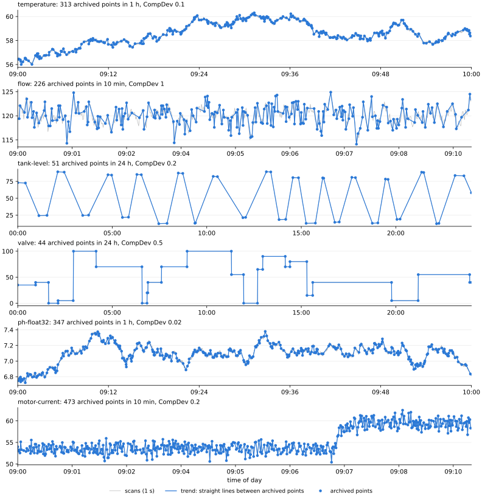
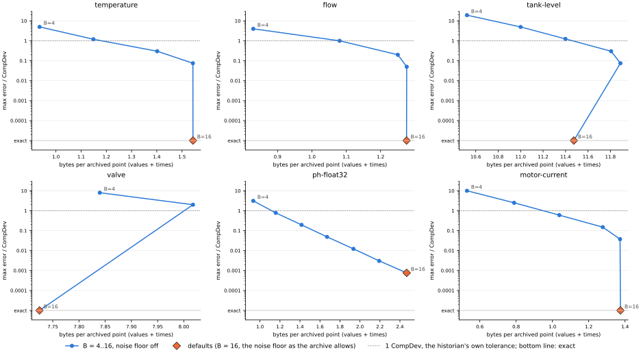
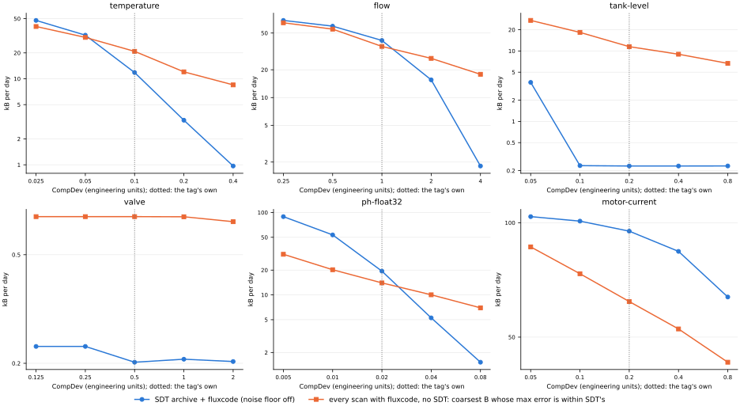

← codec comparison (index.html) · the time axis (time.html)
Process historians that compress with swinging-door trending (SDT; PI's compression, and many others) scan each tag at a fixed rate, drop scans that are within an exception deadband (ExcDev) of the last reported one, and archive only the points that swinging door keeps: actual scans, at irregular times, such that straight lines between them stay close to every snapshot (nominally within CompDev; in practice up to twice that). That is what an export of the archive gives you, and what this page encodes: one unit per tag and day, values and exact timestamps. The data are six simulated tags (5 days each, 1 s scans) chosen to cover what SDT archives look like: from 1 point in 2,000 scans (a valve) to nearly every scan (a noisy tag with a tight CompDev).
Store the archived points themselves. A historian can also export a regular series (interpolated, or held as a forward fill gives), but that throws the points away and costs more: resampled exports.
Regenerate: cd experimental && uv run python make_sdt_report.py (a few minutes; sizes and
errors only, no timings). The simulator is tslab/common/historian.py.
Params(noise_floor_sigma=None)). Swinging door keeps
only the points a straight line can't predict, so an archive looks like white noise to the noise-floor detector, which
coarsens the step: at the defaults fluxcode's own error reaches 0.6 CompDevs on motor-current
(0.098–0.6 on the dense tags). With it off, the dense decimal tags
(temperature, flow, motor-current) decode exactly at 1.27–1.51 bytes per point, values
and times, and the float32 tag is within 0.0008 CompDevs at
2.38 bytes per point.Each tag is scanned every second for a day, then filtered by exception (ExcDev = CompDev / 2, the usual rule; the scan before each exception is reported too) and by swinging door (CompMax 8 h). Times are whole seconds, as a scan class gives. Errors are in CompDevs, CompDev being the historian's nominal tolerance. The historian's trend (straight lines between archived points) strays from the scans by up to about 2.5 CompDevs: swinging door archives the real scan where the doors close, and the line to it is only guaranteed within CompDev at that scan, so earlier snapshots can be up to 2 CompDevs off it (about 1.9 here); the exception filter adds the rest.
| tag | what it is | CompDev | points per day | scans per point | trend vs scans: max | RMS |
|---|---|---|---|---|---|---|
| temperature | Daily cycle + slow drift (τ 30 min) + noise σ 0.03 °C, 0.01 °C resolution | 0.1 | 7,802 | 11.1 | 2.45 | 0.68 |
| flow | Setpoint steps (6/day) through a 60 s lag + process noise (σ 1.5, τ 5 s) + measurement noise σ 0.8, 0.1 resolution: noise above CompDev | 1 | 32,678 | 2.6 | 2.25 | 0.65 |
| tank-level | Fill and drain ramps (0.01–0.05 %/s) between holds + noise σ 0.02 %, 0.01 % resolution | 0.2 | 51 | 1,707.5 | 2.79 | 0.68 |
| valve | Position commands in 5 % steps (30/day), 2 %/s travel, no noise, 0.1 % resolution | 0.5 | 57 | 1,505.2 | 1.96 | 0.06 |
| ph-float32 | pH 7 + slow drift (τ 10 min) + noise σ 0.004, stored as float32 (not decimal) | 0.02 | 8,153 | 10.6 | 2.46 | 0.69 |
| motor-current | Load steps (24/day) through a 10 s lag + noise σ 1 A, 0.01 A resolution: CompDev far below the noise, so most scans are archived | 0.2 | 70,974 | 1.2 | 1.82 | 0.37 |
Points per day: mean over the days. Trend vs scans: the worst over the days, and the mean RMS, in CompDevs, before any fluxcode.

Bytes per archived point over all 5 days, everything a decoder needs included. Raw is an int64 time and a float64 value (16 bytes). zstd and Gorilla are lossless: zstd-3 of the time deltas and the values as two int64/float64 columns; Gorilla with its own delta-of-delta timestamps (in seconds) and XOR values. fluxcode is one unit per tag-day in 1000-point blocks (layout), with exact times; its values and times columns split its bytes by encoding the same blocks without times.
| tag | points per day | raw | zstd | Gorilla | fluxcode defaults | max error | fluxcode, noise floor off | values | times | max error | exact | kB per day |
|---|---|---|---|---|---|---|---|---|---|---|---|---|
| temperature | 7,802 | 16 | 3.52 | 7.73 | 1.41 | 0.15 | 1.51 | 0.82 | 0.70 | exact | 100% | 11.82 |
| flow | 32,678 | 16 | 2.64 | 7.77 | 1.10 | 0.2 | 1.27 | 0.86 | 0.41 | exact | 100% | 41.56 |
| tank-level | 51 | 16 | 11.08 | 10.03 | 4.60 | exact | 4.60 | 2.35 | 2.25 | exact | 100% | 0.23 |
| valve | 57 | 16 | 6.64 | 4.52 | 3.52 | exact | 3.52 | 1.35 | 2.17 | exact | 100% | 0.20 |
| ph-float32 | 8,153 | 16 | 5.01 | 4.08 | 1.68 | 0.098 | 2.38 | 1.72 | 0.66 | 0.00076 | 2% | 19.42 |
| motor-current | 70,974 | 16 | 2.40 | 7.44 | 0.85 | 0.6 | 1.34 | 1.20 | 0.14 | exact | 100% | 95.03 |
Max error: the worst |decoded − archived| over the days, in CompDevs. Exact: the share of points that decode bit-exact. kB per day: fluxcode with the noise floor off.
What matters downstream is the trend: straight lines between the decoded points, compared with the scans the historian saw. SDT alone is the historian's own error; fluxcode's is added on top. In CompDevs, worst over the 5 days.
| tag | SDT alone: max | RMS | + fluxcode defaults: max | RMS | + fluxcode, noise floor off: max | RMS |
|---|---|---|---|---|---|---|
| temperature | 2.445 | 0.679 | 2.505 | 0.681 | 2.445 | 0.679 |
| flow | 2.250 | 0.650 | 2.250 | 0.654 | 2.250 | 0.650 |
| tank-level | 2.785 | 0.678 | 2.785 | 0.678 | 2.785 | 0.678 |
| valve | 1.958 | 0.058 | 1.958 | 0.058 | 1.958 | 0.058 |
| ph-float32 | 2.455 | 0.694 | 2.500 | 0.695 | 2.455 | 0.694 |
| motor-current | 1.817 | 0.368 | 2.288 | 0.432 | 1.817 | 0.368 |
fluxcode's B (max_quantize_bits) from 4 to 16 with the noise floor off, and the defaults (diamond).
The error is the worst |decoded − archived| over the 5 days, in CompDevs; exact decodes sit on the bottom line. B sets the
step from each block's range, so the same B gives a different error on each tag: there is no B that means "a tenth of
CompDev".

| tag | B = 4 | B = 6 | B = 8 | B = 10 | B = 12 | B = 14 | B = 16 |
|---|---|---|---|---|---|---|---|
| temperature | 0.85 B 5 | 1.02 B 1.2 | 1.26 B 0.3 | 1.49 B 0.075 | 1.51 B exact | 1.51 B exact | 1.51 B exact |
| flow | 0.83 B 4 | 1.09 B 1 | 1.25 B 0.2 | 1.27 B 0.05 | 1.27 B exact | 1.27 B exact | 1.27 B exact |
| tank-level | 3.30 B 20 | 3.57 B 5 | 3.86 B 1.2 | 4.14 B 0.3 | 4.43 B 0.075 | 4.60 B exact | 4.60 B exact |
| valve | 3.31 B 8 | 3.49 B 2 | 3.52 B exact | 3.52 B exact | 3.52 B exact | 3.52 B exact | 3.52 B exact |
| ph-float32 | 0.88 B 3.1 | 1.08 B 0.78 | 1.33 B 0.2 | 1.59 B 0.049 | 1.84 B 0.012 | 2.10 B 0.0031 | 2.38 B 0.00076 |
| motor-current | 0.59 B 10 | 0.84 B 2.5 | 1.10 B 0.6 | 1.31 B 0.15 | 1.34 B 0.038 | 1.34 B exact | 1.34 B exact |
Each cell: bytes per archived point (values + times), and below it the max error in CompDevs.
An archive has few points per hour, so how a day is cut into blocks matters more than for 1 kHz data: every block stores its own anchors, sizes and time reference. Bytes per point, noise floor off, all 5 days.
| tag | points per day | 10 min blocks | 1 h blocks | 1000-point blocks | one block per day |
|---|---|---|---|---|---|
| temperature | 7,802 | 1.71 | 1.54 | 1.51 | 1.50 |
| flow | 32,678 | 1.28 | 1.28 | 1.27 | 1.34 |
| tank-level | 51 | 21.42 | 11.47 | 4.60 | 4.60 |
| valve | 57 | 13.20 | 7.72 | 3.52 | 3.52 |
| ph-float32 | 8,153 | 2.79 | 2.47 | 2.38 | 2.30 |
| motor-current | 70,974 | 1.33 | 1.37 | 1.34 | 1.39 |
Time blocks come from encode_time_blocks (empty hours cost almost
nothing); point blocks from encode_unit(block_len=…). One block per day is 65,535 points at most, so the
densest tag gets two.
Scan-aligned times are whole seconds; with source timestamps each point keeps the device's time, a scan delayed by 0–200 ms at ms resolution (as OPC timestamps often are). The values are the same. Bytes per point for the times only (fluxcode, noise floor off, the unit minus the same blocks without times), and Gorilla's whole size for comparison.
| tag | fluxcode times: scan-aligned | source timestamps | Gorilla (all): scan-aligned | source timestamps |
|---|---|---|---|---|
| temperature | 0.70 | 2.01 | 7.73 | 10.69 |
| flow | 0.41 | 1.62 | 7.77 | 9.67 |
| tank-level | 2.25 | 3.61 | 10.03 | 11.77 |
| valve | 2.17 | 3.53 | 4.52 | 5.74 |
| ph-float32 | 0.66 | 1.91 | 4.08 | 7.00 |
| motor-current | 0.14 | 1.25 | 7.44 | 8.67 |
A historian can also be read at a fixed rate: interpolated (straight lines between the archived points) or held (each scan takes the last archived value, as a forward fill gives). If that is all you have, fluxcode stores the regular series (noise floor off, 1000-scan blocks, its 1 s times included), but the archived points are cheaper and keep the information: an interpolated series is off the decimal grid, and its rounded ramps leave residuals of a step or so. kB per day, mean over the 5 days; errors are max |decoded − read-back| in CompDevs.
| tag | archived points + times: kB/day | interpolated at 1 s: kB/day | max error | held at 1 s: kB/day | max error |
|---|---|---|---|---|---|
| temperature | 11.82 | 46.36 | 0.00061 | 17.21 | exact |
| flow | 41.56 | 96.53 | 0.00096 | 46.34 | exact |
| tank-level | 0.23 | 4.53 | 0.0024 | 1.13 | exact |
| valve | 0.20 | 1.12 | 0.0019 | 0.49 | exact |
| ph-float32 | 19.42 | 47.76 | 0.00038 | 37.06 | 0.00038 |
| motor-current | 95.03 | 159.31 | 0.0024 | 101.55 | exact |
If the scans are still available (at the source, or before the historian compresses), fluxcode can store every one of them instead. Here every scan of the day is one unit (1000-scan blocks, the 1 s times included): at the defaults, and at the coarsest B (noise floor off) whose max error is within a budget: one CompDev (SDT's nominal tolerance), or the error SDT actually made that day (the same max error, a fair comparison). The SDT route is the archive with fluxcode (noise floor off), its error that of the trend. kB per day, mean over the 5 days; errors are the worst max |decoded − scan| in CompDevs.
| tag | SDT + fluxcode: kB/day | max error | every scan, defaults: kB/day | max error | within 1 CompDev: kB/day | B | max error | within SDT's error: kB/day | B | max error |
|---|---|---|---|---|---|---|---|---|---|---|
| temperature | 11.82 | 2.45 | 54.86 | exact | 30.26 | 6 | 0.6 | 20.82 | 5 | 1.2 |
| flow | 41.56 | 2.25 | 61.96 | 0.1 | 46.45 | 5–6 | 1 | 35.81 | 4–5 | 2 |
| tank-level | 0.23 | 2.79 | 47.77 | exact | 20.54 | 8 | 0.6 | 11.52 | 6 | 2.5 |
| valve | 0.20 | 1.96 | 0.70 | exact | 0.69 | 7–8 | exact | 0.69 | 7–8 | exact |
| ph-float32 | 19.42 | 2.45 | 136.69 | 0.049 | 20.21 | 5 | 0.78 | 13.98 | 4 | 1.6 |
| motor-current | 95.03 | 1.82 | 62.67 | 0.6 | 73.41 | 7–8 | 0.6 | 62.03 | 6–7 | 1.2 |
The same comparison as CompDev changes (ExcDev stays half of it), mean kB per day:
